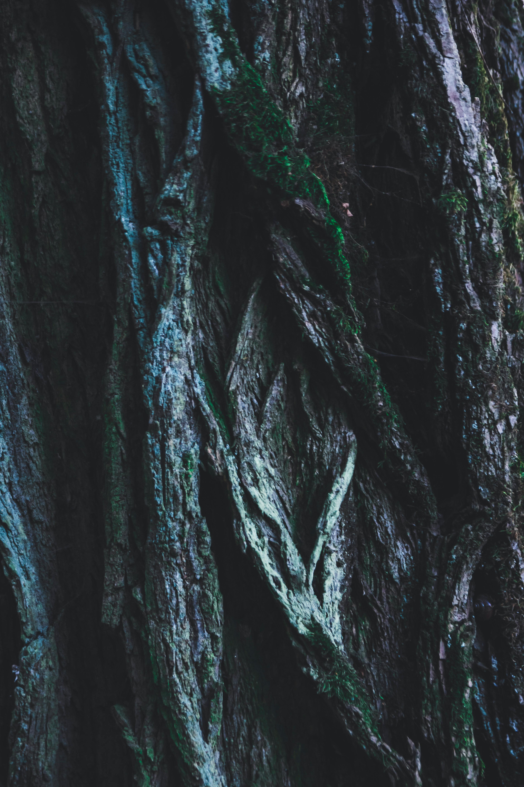

| Você explora os arredores do lago, sem muito sucesso. Naturalmente, seus olhos se dirigem para a árvore no meio do lago. Já está bem escuro mas você decide tentar sua sorte. Colocando os seus pés na água, você nota que ela é relativamente raza e não haverá problemas em andar pela água. Chegando próximo á arvore, você encontra um formulário estranho carvado em seu tronco. |  |
|---|